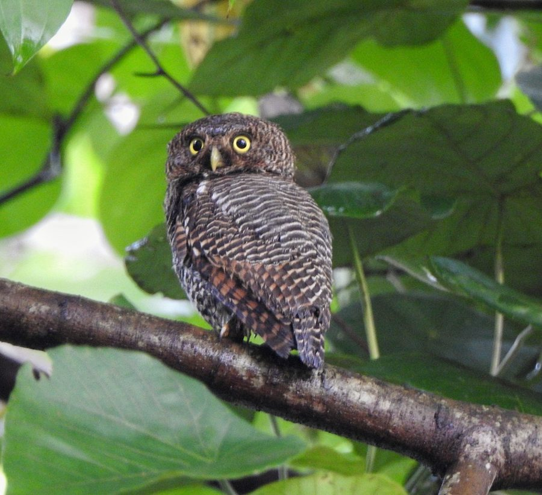

जंगली उल्लूJungle Owlet
Glaucidium radiatum · Strigidae · BRD-0172

- Scientific name वैज्ञानिक नाम
- Glaucidium radiatum (Tickell, 1833)
- Family कुल
- Strigidae
- Hindi हिंदी
- जंगली उल्लू
- Local names स्थानीय नाम
- jangli ullu, jungli ullu, jungle owlet, owlet
- Status here यहाँ की स्थिति
- native
- Movement आवागमन
- Resident, here all year
- Known from कहाँ दर्ज
- Others have published records from the Basti–Ayodhya districts बस्ती–अयोध्या के ज़िलों से दूसरों के प्रकाशित अभिलेख
- IUCN IUCN
- LC
- Review समीक्षा
- audited and independently read
When to look कब देखें
Present all year. साल भर मौजूद।
Uses and possibilities उपयोग और संभावनाएँ
Drawn from the documented uses in the profile below, where each is labelled traditional, current or a research lead. All uses →
Tell it apart from इनसे अलग पहचानें
जंगली उल्लू / Jungle Owlet
Glaucidium radiatum (Tickell, 1833) — Strigidae
जंगली उल्लू — सब से छोटा उल्लू जो भारत में देखा जाता है। इसकी लंबाई बस बीस सेंटीमीटर के आसपास होती है। यह पेड़ों में दिन भर सोता है, और रात को शिकार करता है। इसकी आवाज़ एक-एक करके कुछ-कुछ तेज़ चिल्लाहट जैसी होती है। गाँवों के पेड़ों, बागों, और जंगलों के किनारे इसे पाया जाता है। दिन में अगर गौर से देखो तो पेड़ों की खोखलों में सोता हुआ दिख सकता है।
Quick Identification त्वरित पहचान
| Feature | Description |
|---|---|
| Size | Small owl, 17–20 cm long; one of India's smallest owls |
| Plumage | Brown to greyish-brown; finely spotted and streaked |
| Eyes | Large, yellow, forward-facing; owl-like and diagnostic |
| Head | Rounded; no ear tufts (unlike some larger owls) |
| Facial disc | Indistinct; less prominent than in larger owls |
| Bill | Short, hooked, yellow; typical owl bill |
| Feet | Feathered; yellow cere visible |
| Tail | Short; brown with barring |
| Wings | Brown; folded close to body at rest |
| Posture | Upright, columnar (typical of owls) |
Field tip: In daytime on trees, look for a small, brown owl perched upright and motionless. The yellow eyes and small size are diagnostic. At night, listen for the repeated, hooting calls — a series of 5–6 sharp calls given at intervals. It is nocturnal and easily overlooked during the day; nocturnal observation is more rewarding.
हिंदी — कैसे पहचानें: बहुत छोटा उल्लू। दिन में पेड़ों पर ही सोता है। बड़ी पीली आँखें। रात को तेज़ आवाज़ निकालता है।
Morphology आकारिकी
Biometrics:
| Measurement | Range |
|---|---|
| Total length | 170–200 mm |
| Wing | 120–135 mm |
| Tail | 60–70 mm |
| Bill | 12–14 mm |
| Tarsus | 18–20 mm |
| Weight | 50–75 g |
Plumage: Overall brown to greyish-brown. Fine streaking and spotting throughout, giving a mottled appearance. Crown and back darker than the underparts. Underparts (breast and belly) lighter, with fine streaking. The overall effect is cryptic coloration that provides excellent camouflage on trees.
Facial disc: Less prominent than in larger owls; eyes set more to the sides of the face than in full-frontal owls. No obvious "disc" around the face.
Eyes: Large, forward-facing, bright yellow. The large eyes and their position give the owlet its characteristic "fierce" or alert expression.
Bill: Short, hooked, partly concealed by feathering; yellow base visible. Typical owl bill adapted for tearing prey.
Feet and cere: Yellow; feathered to the toes (unlike some other birds); adapted for perching on branches.
Tail: Short and rounded; brown with some barring or mottling.
Wings: Relatively long and pointed; brown with some lighter feather edges.
Plumage variants: Some individuals may be more rufous (reddish-brown) or more grey; colour variation corresponds to individual and possibly environmental variation, not obvious sexual dimorphism.
Head shape: Rounded; no ear tufts (unlike Eagle Owls or Long-eared Owls). This round head is distinctive.
Size relative to other birds: Noticeably smaller than a sparrow (22–25 cm); about the size of a large sunbird.
Vocalisations: A series of 4–6 repeated hoots or calls, often written as "chook-chook-chook" or a rolling "coo-coo-coo" repeated; calls given mainly at dusk and night but sometimes in the early morning. The calls are distinctive and are often the easiest way to detect the bird.
हिंदी: छोटा-सा उल्लू, भूरे-सलेटी रंग का। पीली आँखें बहुत बड़ी। रात को "चूक-चूक-चूक" की आवाज़।
Behaviour & Ecology व्यवहार और पारिस्थितिकी
The Jungle Owlet is a small nocturnal predator that forages at night for small rodents, insects, and other small prey. It is primarily arboreal (tree-dwelling) and rests concealed in tree cavities or dense foliage during the day.
Roosting behaviour: Spends the day motionless on tree branches or in cavities, relying on cryptic coloration for concealment. Extremely well-camouflaged; often overlooked in daytime despite being relatively common.
Foraging and hunting: Hunts at night, primarily for small rodents (rats, mice), insects, and small birds. Hunts from a perch, dropping to the ground to capture prey. May also catch insects in flight or glean them from branches.
Habitat preferences: Occupies open woodlands, scrubland, gardens with scattered trees, and forest edges. Prefers areas with a mix of open ground and tree cover. Less dependent on dense forest than larger owls.
Nesting: Nests in tree cavities, using the abandoned holes of woodpeckers or natural cavities in old trees. May also nest in cavities in old buildings or in nest boxes.
Social behaviour: Solitary or in pairs; pairs may roost together. Sometimes heard calling together during breeding season.
Territorial behaviour: Likely territorial; the repeated calls during breeding season are presumed to be territorial announcements.
Seasonal movements: Year-round resident; no migratory behaviour documented.
Nocturnal activity: Strictly nocturnal; begins activity around dusk and becomes silent before dawn. Peak calling period is early dusk (around sunset).
हिंदी: रात को शिकार करता है। दिन में पेड़ों में छिपा रहता है। अकेला रहता है या जोड़ा बनाता है।
Life Cycle / Phenology जीवन चक्र
| Stage / season | Notes |
|---|---|
| Breeding season | January–April; peak February–March |
| Nest | In tree cavities; uses abandoned woodpecker holes |
| Clutch size | 3–5 eggs; typically 4 |
| Incubation period | 26–28 days |
| Fledging period | 30–35 days |
| Brood | Usually one brood per season |
| Juveniles | Fledge April–May; independent by July |
| Non-breeding season | May–December; birds may remain in territory or move locally |
| Moult | Post-breeding; typically June–August |
| Longevity | Unknown in wild; likely 5–10 years |
Seasonal pattern in eastern UP:
- January–February: Breeding begins; pairs calling and establishing territories; nest-building
- March–April: Eggs in nest; peak calling activity
- May–June: Chicks in nest; chicks fledging
- July–August: Fledglings learning to hunt; post-breeding moult
- September–December: Non-breeding; wandering or territorial; reduced calling
- Year-round presence: Resident throughout the region
हिंदी: फरवरी-अप्रैल में अंडे देते हैं। पेड़ों के खोखल में घोंसला बनाते हैं। साल भर रहते हैं।
Host Plants or Prey आहार
Predatory diet:
- Small rodents: rats, mice, shrews
- Insects: beetles, grasshoppers, crickets, moths
- Small birds: occasionally small songbirds (juvenile sparrows, warblers)
- Lizards: occasionally small reptiles
- Spiders and other small arthropods
The diet is primarily small rodents supplemented with insects. Rodents may be the primary prey in areas with abundant rodent populations.
हिंदी: चूहे, कीड़े, छोटी चिड़ियाँ खाता है।
Predators / Natural Enemies शत्रु
- Larger raptors: Large eagles, if they encounter Jungle Owlet at night or day roosts
- Mobbing by songbirds: Small birds may mob and harass roosting owlets during daytime
- Snakes: Particularly racer and rat snakes; predatory on eggs and chicks
- Corvids and other birds: May harass or attack if the owlet is discovered roosting
The camouflage and strictly nocturnal habits provide protection from most predators.
हिंदी: बड़े बाज़, सँप, और दूसरी चिड़ियाँ इसका शिकार करती हैं।
Agricultural / Human Relevance कृषि प्रासंगिकता
Beneficial predator: Feeds primarily on small rodents, which are agricultural pests. Consumption of rodents may provide significant pest control benefit in agricultural areas. Also feeds on insects, some of which are crop pests.
Protected under law: Like all wild birds in India, protected under the Wildlife (Protection) Act 1972, Schedule IV. Hunting or trapping is prohibited.
Cultural significance: Owls have important place in Indian folklore and mythology. The Jungle Owlet, being small and less prominent than larger owls, has fewer specific cultural references, though it is appreciated for pest control.
No conflicts documented: The bird does not cause crop damage and its pest control activity is beneficial.
हिंदी: यह विधि अधिनियम 1972 की अंतर्गत संरक्षित है। खेतों के चूहों को खाता है, इसलिए फ़ायदेमंद है।
Expected Locally स्थानीय रूप से अपेक्षित
Not a field record. Written from published accounts for eastern Uttar Pradesh. No confirmed local sighting yet — if you have seen it, that is what the atlas needs.
अभी तक स्थानीय पुष्टि नहीं। यह विवरण प्रकाशित स्रोतों से है, किसी अवलोकन से नहीं।
Not a field record. This species' presence is based on its known distribution in India. GBIF holds published records from the wider Awadh–Purvanchal plain and from Basti–Ayodhya districts.
ये दूसरों के प्रकाशित अभिलेख हैं, परियोजना के नहीं। यह पहले से दर्ज है।
Expected year-round in woodlands, scrubland, gardens, and cultivated areas with scattered trees throughout Basti district and eastern Uttar Pradesh. Most easily detected by listening for the nocturnal calls, particularly during breeding season (February–April). Daytime sightings are challenging due to excellent camouflage; nocturnal observation or sound recording is more rewarding.
A dated recording of the bird's nocturnal calls, or a nocturnal photograph with date and location, would confirm a local record.
Distribution वितरण
Global range: Indian subcontinent; endemic to South Asia. Distributed throughout India except the highest Himalayan elevations.
In India: Widespread in suitable habitat from sea level to about 2000 m elevation; occurs in all states.
In Uttar Pradesh: Recorded in woodlands and gardens throughout the state; common in eastern districts.
In Basti district / eastern UP: Common year-round in woodlands, gardens, and cultivated areas with scattered trees; nocturnal and easily overlooked despite being relatively common.
Research Questions शोध प्रश्न
- जंगली उल्लू गर्मी और सर्दी में क्या खाता है — क्या चूहे और कीड़े दोनों बराबर खाता है?
- How far do Jungle Owlets disperse from their natal territory, and do young establish territories locally or move away?
- क्या जंगली उल्लू की सफलता खेतों के चूहों की संख्या पर निर्भर करती है?
- What proportion of nest sites are in tree cavities vs. other locations (buildings, nest boxes)?
- How do nocturnal calling patterns vary seasonally, and what is the significance of calling frequency?
- क्या शहर के बाग़ों में जंगली इलाक़ों के मुक़ाबले ज़्यादा या कम जंगली उल्लू होते हैं?
Similar Species मिलती-जुलती प्रजातियाँ
| Species | Key Difference | Hindi | |
|---|---|---|---|
| [[spotted_owlet\ | Spotted Owlet]] (Athene brama) | Slightly larger (20–23 cm); white spotting on wing coverts (not streaked); different habitat (more urban); different calls | सफ़ेद-दाग़ वाला उल्लू, अलग आवाज़ |
| Little Owl (Athene noctua) | Similar size but different distribution (western India primarily); different plumage and call | दूसरी जाति का छोटा उल्लू |
Field rule: A very small, brown, streaked (not spotted) owl with large yellow eyes and distinctive hooting calls in woodlands and gardens — this is the Jungle Owlet. The Spotted Owlet is slightly larger, shows white spots (not streaks), and has different calls; it is more urban.
Taxonomy & Classification वर्गीकरण
Original description. The species was described by Samuel Tickell in 1833 in the Journal of the Asiatic Society of Bengal as Strix radiata. The genus Glaucidium was assigned later. Type locality is eastern India.
Subspecies. No subspecies are currently recognised within Glaucidium radiatum; the species is treated as monotypic.
Family and order placement. Order Strigiformes (owls); family Strigidae (true owls). The genus Glaucidium comprises small owls distributed across Eurasia, Africa, and the Americas; G. radiatum is endemic to the Indian subcontinent.
Phylogenetic notes. Glaucidium radiatum is endemic to the Indian subcontinent and represents a distinct lineage within the genus. It is one of the smallest Old World owls.
IUCN status rationale. The species is assessed as Least Concern (LC) due to its wide range, abundance, and adaptability to human-modified landscapes. Populations appear stable.
हिंदी: भारत ही का रहने वाला उल्लू है। भारत के अलावा और कहीं नहीं है।
Photo Gallery फोटो गैलरी
No photos yet — add field photos to media/species/jungle_owlet/ and run node scripts/sync_photos.js.
Wanted photos:
- Daytime roost on tree branch
- Close-up showing yellow eyes and plumage detail
- Nocturnal photograph (using infrared or flash)
- At tree cavity or nest site
Wanted audio:
- Nocturnal calling sequence
- Territorial call from roosting bird
References संदर्भ
- Tickell, S.R. (1833). Journal of the Asiatic Society of Bengal 2: 573. [original description as Strix radiata]
- Ali, S. & Ripley, S.D. (1968). Handbook of the Birds of India and Pakistan. Vol. 1 (Divers to Hawks). Oxford University Press, Delhi. Pp. 165–166.
- Grimmett, R., Inskipp, C. & Inskipp, T. (2011). Birds of the Indian Subcontinent: The Ripley Guide. 2nd edn. Helm Identification Guides, Oxford. Vol. 1, pp. 210–211.
- GBIF Occurrence Data — Glaucidium radiatum, India (2024).
- Rasmussen, P. C. & Anderton, J. C. (2012). Birds of South Asia: The Ripley Guide. 2nd ed. Smithsonian Institution and Lynx Edicions.
- BirdLife International. Glaucidium radiatum. IUCN Red List of Threatened Species. https://www.iucnredlist.org/
Source file: species/fauna/birds/jungle_owlet.md